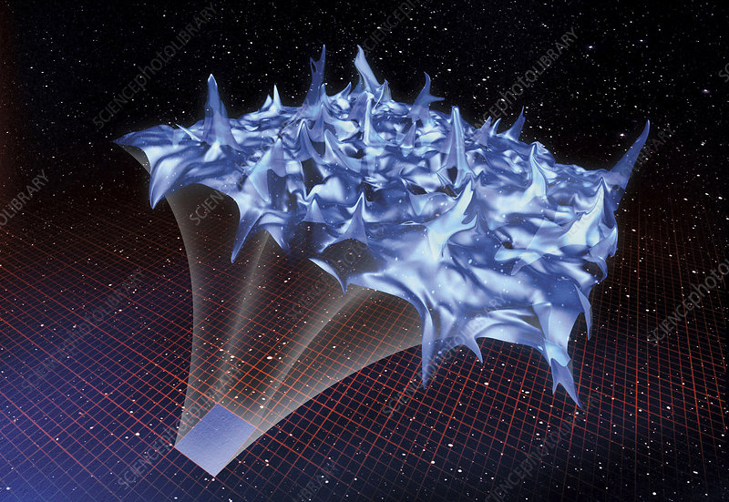

I'm a PhD student working on Quantum Gravity at Universitat Politècnica de València.
I have a broad interest in Quantum Gravity and related areas. Currently, my focus mostly revolves around the zero–point length of spacetime and and its consequences. I have occasionally invested myself in Loop Quantum Garvity and other emergent approach towards quantisation of gravity.
What i'm doing
General Relativity
Quantum Field Theory

Emergent Gravity
Quantum Gravity
Daniel lewis
Resume
Education
Indian Institute of Science Education and Research Mohali
Pre-PhD Project at Universitat Politècnica de València, Valencia
Thermodynaics of the Zero-point Length and Gravitational Selfduality Advisor : Prof. José M. Isidro
12/2022 - Ongoing
It has been argued that the existence of a zero–point length is the hallmark of quantum gravity. In this letter we suggest a thermal mechanism whereby this quan- tum of length arises in flat, Euclidean spacetime ℝd . For this we consider the infinite sequence of all flat, Euclidean spacetimes ℝd ′ with d ′ ≥ d, and postulate a probability distribution for each d ′ to occur. The distribution considered is that of a canonical ensemble at temperature T, the energy levels taken to be those of a 1–dimensional har- monic oscillator. Since both the harmonic energy levels and the spacetime dimensions are evenly spaced, one can identify the canonical distribution of harmonic oscillator eigenvalues with that of dimensions d ′ . The Gaussian state describing the density matrix of this statistical ensemble has a width that can be interpreted as a quantum of length. Thus placing an oscillator in thermal equilibrium with a bath provides a thermal mechanism whereby a zero–point length is generated. The quantum gravitational implications of this construction are then discussed. In particular, a model is presented that realises a conjectured duality between a weakly gravitational, strongly quantum system and a weakly quantum, strongly gravitational system.
Pre-PhD Project at TIFR, Mumbai
Trace Dynamics and Emergent Gravity Advisor : Prof. Tejinder Pal Singh
05/2022 - Ongoing
When gravity is quantum, the point structure of space-time should be replaced by a non-commutative coordinate geometry. This is true even for quantum gravity in the infra-red. Using the octonions as space-time coordinates, we construct a pre-spacetime, pre-quantum Lagrangian dynamics. We found that the symmetries of this non-commutative space unify the standard model of particle physics with SU(2)R chiral gravity. The algebra of the octonionic space yields spinor states which can be identified with three generations of quarks and leptons. The geometry of the space implies quantisation of electric charge, and leads to a theoretical derivation of the mysterious mass ratios of quarks and the charged leptons. Now our goal is to achieve the theory of classical U(1)grav gravity with a surface term as an emergent phenomena in octonion spacetime.
Master’s Thesis at IISER Mohali
The Classical and Quantum Analysis of Traversable Wormholes Advisor : Dr. Kinjalk Lochan04/2021 - 05/2022
The Einstein-Rosen bridge or the Schwarzschild wormhole indicates the idea of removing singularity in classical field theory by transforming the Schwarzschild metric into an Einstein-Rosen coordinate, which indicates exclusion of the interior Schwarzschild region and gluing two identical copies of the exterior Schwarzschild region. But the Einstein-Rosen bridge does not satisfy the traversability condition. Morris and Thorne developed the metric of traversable wormhole for the first time. We have considered the simpliest class of Schwarzschild-like traversable wormholes and found that the Pseudo-Newtonain potential is being modified with respect to the Schwarzschild non-traversable wormholes. In Einstein's gravity, the geometry part indicates the violation of classical energy conditions. But in a certain class of f(R) theories of gravity with f(R) = R + α R2n ∀ α > 0, n ∈ ℤ+, we found that the geometry satisfies the energy conditions and that indicates the existence of a classical traversable wormhole in f(R) gravity. To explain the violation of energy conditions in Einstein's gravity, we have considered a real scalar field as the source. The energy conditions restricted the possibilities within certain range of the scalar field, which can source the geometry. We have done similar analysis with the metric in f(R) gravity and restricted the scalar field along with the parameters in f(R) theories.
Winter Intern at IISER Mohali
Einstein-Rosen "Bridge" and Lightlike Thin-Shell Wormhole Advisor : Dr. Kinjalk Lochan11/2020 - 12/2020
The original Einstein-Rosen ``Bridge'' is not equivalent to the concept of the dynamical and non-traversable Schwarzschild wormhole, also called ``Einstein-Rosen Bridge'' in modern textbooks on general relativity. The original Einstein-Rosen ``bridge'' requires the presence of a special kind of ``exotic'' matter source located on its throat.
Summer Intern at BITS Pilani, Hyderabad Campus
Hawking Radiation As Tunneling Advisor : Dr. Swastik Bhattacharya04/2020 - 08/2020
Hawking Radiation can be explained as a tunneling process, based on particles in a dynamical geometry. We present a direct reformulation of this approach in Path Integral formalism and the connection between the tunneling amplitude in terms of proper time and coordinate time.